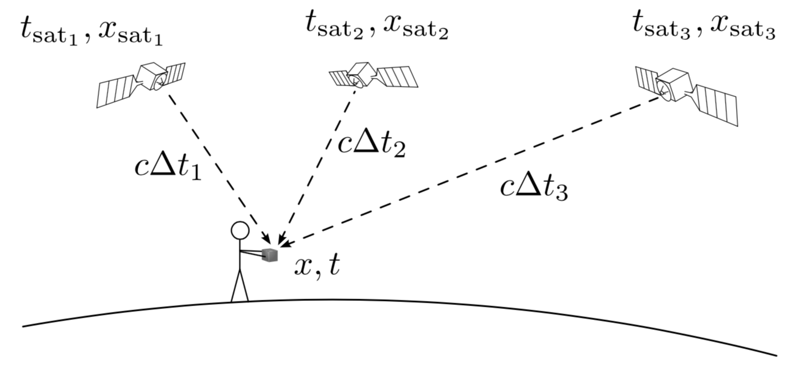

Her har du 3 ukjente som er de 3 komponentene av posisjonsvektoren din x⃗. Kan du skrive opp 3 likninger for å løse disse? Dvs. de 3 likningene som GPS-mottakeren løser for å finne din posisjon? Merk at du ikke skal løse likningene, kun skrive de opp!. Bruk gjerne SI-enheter nå isteden for relativistiske enheter.